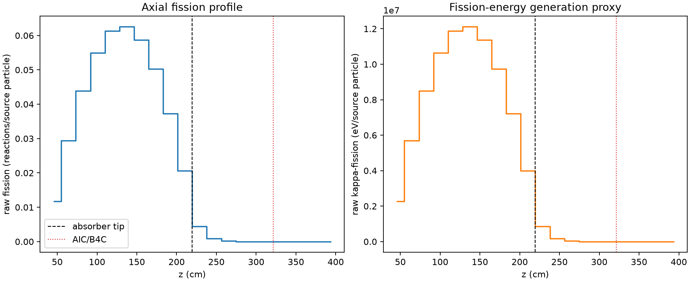
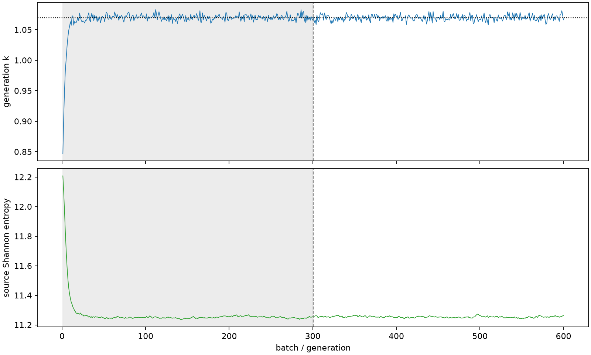

| field | value |
|---|---|
| experiment | V2-STAGE_32_OGRENCI_03-0006 |
| k | 1.0695209707211366 |
| MC standard error | 0.00016965236960138604 |
| seconds | 1009.854619021 |
| acceptance | not_assessed |
| convergence | review_required |
Completed is output integrity only; physical and statistical review required. Zero tallies do not prove zero production or zero uncertainty.
| diagnostic | value |
|---|---|
| geometric fuel voxels | 5280 |
| zero fission tally voxels | 765 |
| low signal fuel voxels | 1687 |
| low signal fission share | 7.089267999912306e-05 |
| low signal kappa share | 7.093447227762014e-05 |
| important fission share | 0.9501116723342228 |
| previous filter included | 3593 |
| duration estimate s | 1562.5173488400023 |
| actual minus estimate s | -552.6627298190024 |
| fission relative MC error | statistics |
|---|---|
| all_geometric_fuel | {"voxels": 5280, "positive_mean_voxels": 4515, "zero_mean_voxels": 765, "undefined_relative_error_voxels": 765, "median": 0.010087182976228981, "p95": 0.8234599160237571, "maximum": 1.0000000000000002} |
| low_signal | {"voxels": 1687, "positive_mean_voxels": 922, "zero_mean_voxels": 765, "undefined_relative_error_voxels": 765, "median": 0.5589186877552408, "p95": 1.0, "maximum": 1.0000000000000002} |
| important_95pct | {"voxels": 2318, "positive_mean_voxels": 2318, "zero_mean_voxels": 0, "undefined_relative_error_voxels": 0, "median": 0.006563683241133293, "p95": 0.009843710218984513, "maximum": 0.011626913448399225} |
| outside_previous_filter | {"voxels": 1687, "positive_mean_voxels": 922, "zero_mean_voxels": 765, "undefined_relative_error_voxels": 765, "median": 0.5589186877552408, "p95": 1.0, "maximum": 1.0000000000000002} |
| kappa_fission relative MC error | statistics |
|---|---|
| all_geometric_fuel | {"voxels": 5280, "positive_mean_voxels": 4515, "zero_mean_voxels": 765, "undefined_relative_error_voxels": 765, "median": 0.01007340559135005, "p95": 0.8243310877740585, "maximum": 1.0000000000000002} |
| low_signal | {"voxels": 1687, "positive_mean_voxels": 922, "zero_mean_voxels": 765, "undefined_relative_error_voxels": 765, "median": 0.5578003173991536, "p95": 1.0, "maximum": 1.0000000000000002} |
| important_95pct | {"voxels": 2318, "positive_mean_voxels": 2318, "zero_mean_voxels": 0, "undefined_relative_error_voxels": 0, "median": 0.006555223485040533, "p95": 0.009830075011932792, "maximum": 0.011612375699869535} |
| outside_previous_filter | {"voxels": 1687, "positive_mean_voxels": 922, "zero_mean_voxels": 765, "undefined_relative_error_voxels": 765, "median": 0.5578003173991536, "p95": 1.0, "maximum": 1.0000000000000002} |
| axial bin | fission share | kappa-fission share |
|---|---|---|
| 1 | 0.027014777867111855 | 0.02701633240128103 |
| 2 | 0.06727476965554235 | 0.06727453304704761 |
| 3 | 0.1005381948034058 | 0.10053750514317165 |
| 4 | 0.12582357260064864 | 0.12582216459605305 |
| 5 | 0.14051822186240742 | 0.14051695034565656 |
| 6 | 0.14333524956435498 | 0.1433340744783183 |
| 7 | 0.13463732654146593 | 0.13463632036576056 |
| 8 | 0.11509596432576832 | 0.11509519038188121 |
| 9 | 0.08552505133171151 | 0.08552446544255406 |
| 10 | 0.04736006674648869 | 0.04736023306420413 |
| 11 | 0.010165352120731998 | 0.01016946092710145 |
| 12 | 0.002106558387706533 | 0.002107554287226454 |
| 13 | 0.0004680145734917467 | 0.0004682558952821168 |
| 14 | 0.00010536178650127253 | 0.00010542412589570262 |
| 15 | 2.38613473783237e-05 | 2.3873429409746666e-05 |
| 16 | 6.162050343478648e-06 | 6.166628099682924e-06 |
| 17 | 1.274407874021852e-06 | 1.275700153996472e-06 |
| 18 | 2.2002706722962467e-07 | 2.1974090252712043e-07 |
| 19 | 0.0 | 0.0 |
| 20 | 0.0 | 0.0 |
Histories include the inactive-to-active transition at batch 300. kappa-fission approximates fission energy production, not total heat deposition.

